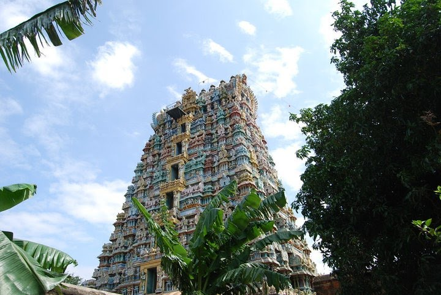

Don't Miss the Car festival in Nanguneri,Tirunelveli-627108
Nanguneri is a panchayat town in Tirunelveli district in the Indian state of Tamil Nadu.Nanguneri is a Taluk Headquarters in the District of Tirunelveli situated at a distance of 18 miles (29 km) from the headquarters of the District. Vanamamalai Perumal temple located here, is a Vaishnavite Shrine also known as Arulmigu Sree Vanamamalai Totatri Perumal Temple or more commonly known as Totadri Mutt.

Nanguneri Gallery
Nanga tha la Gethuu | Irunga Bhai | Vangaa laa
As of 2001 India census,[2] Nanguneri had a population of 6,764. Males constitute 49% of the population and females 51%. Nanguneri has an average literacy rate of 76%, higher than the national average of 59.5%: male literacy is 83%, and female literacy is 70%. In Nanguneri, 10% of the population is under 6 years of age.
As of 2001 India census,[2] Nanguneri had a population of 6,764. Males constitute 49% of the population and females 51%. Nanguneri has an average literacy rate of 76%, higher than the national average of 59.5%: male literacy is 83%, and female literacy is 70%. In Nanguneri, 10% of the population is under 6 years of age.
.jpg)